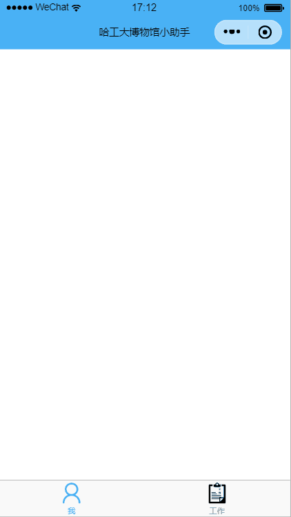
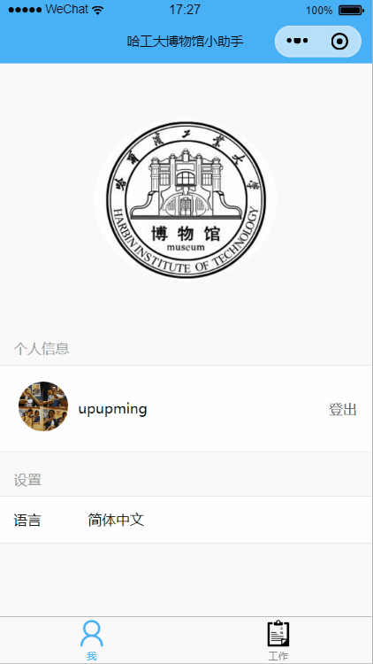
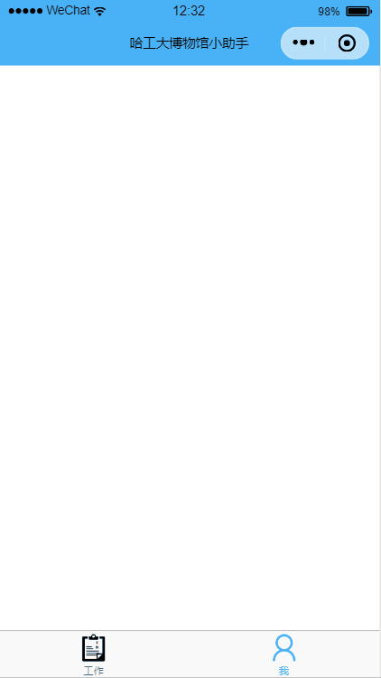

微信小程序对没有对多语言的支持，不过我们可以自行加入。
在实现过程中，主要考虑到如下几点：
语言是全局变量，一旦修改语言，其它页面应该立即作出变化。
保存用户选择的语言，用户下次重新打开小程序能够恢复用户的选择。
wx 之下在 utils 目录下新建一个 i18n.js 文件。
let T = { locale: null , locales: {}, langCode: ['zh-Hans' , 'en' ] } T.registerLocale = function (locales ) T.locales = locales; } T.setLocale = function (code ) T.locale = code; } T.setLocaleByIndex = function (index ) T.setLocale(T.langCode[index]); } T.getLanguage = function ( return T.locales[T.locale]; } export default T
T.locale 用来存储一个对象，这个对象是当前用户选择的语言。在使用 T 之前，我们需要调用 registerLocale 初始化 locales。
我们在 /utils/locales.js 中这样定义可用的 locales：
export default { 'zh-Hans' : { "language" : "语言" , "languageName" : "简体中文" , "login" : "登录" , "logout" : "登出" , "changed" : "修改成功" , "loginSuccessed" : "登录成功" , "loginFailed" : "登录失败" , "logining" : "正在登陆" , "requestError" : "请求失败" , "personalInfo" : "个人信息" , "settings" : "设置" , "checkIn" : "签到" , "checkOut" : "签出" }, 'en' : { "language" : "Language" , "languageName" : "English" , "login" : "Log in" , "logout" : "Log out" , "changed" : "Changed successfully" , "loginSuccessed" : "Logged in" ,"loginFailed" : "Logged in failed" , "logining" : "Logging in" , "requestError" : "Request error" , "personalInfo" : "Personal information" , "settings" : "Settings" , "checkIn" : "Check in" , "checkOut" : "Check out" } }
为了让 T 成为全局变量，我们需要在小程序注册之前就将其初始化。在 app.js 中写入如下代码。
import locales from './utils/locales' import T from './utils/i18n' T.registerLocale(locales); T.setLocaleByIndex(wx.getStorageSync('langIndex' ) || 0 ); wx.T = T; App({ onLaunch: function ( }, globalData: { } })
我们在 (1) 处用 /utils/locales 注册了 locale，在 (2) 处将当前语言设置为用户上一次选择的语言，如果是第一次使用，则调用 T.setLocaleByIndex(0) 将语言设置成中文，在 (3) 处将 T 注册到 wx 之下，这样在任何地方都可以调用 wx.T.getLanguage() 来得到当前的语言对象了。
我们这里看到的 langIndex 这个缓存在用户每次更改语言的时候都将要重新存储一下，关于微信缓存的接口可以查看文档：数据缓存 。
切换语言这个功能是在 /pages/index 页面下实现的，index.js 的代码如下：
var util = require ('../../utils/util.js' )import event from '../../utils/event' Page({ data: { language: '' , languages: ['简体中文' , 'English' ], langIndex: 0 }, onLoad: function ( this .setData({ langIndex: wx.getStorageSync('langIndex' ) }); this .setLanguage(); }, changeLanguage(e) { let index = e.detail.value; this .setData({ langIndex: index }); wx.T.setLocaleByIndex(index); this .setLanguage(); event.emit('languageChanged' ); wx.setStorage({ key: 'langIndex' , data: this .data.langIndex }) }, setLanguage() { this .setData ({ language: wx.T.getLanguage() }); } })
相应的 index.wxml（使用 Zan UI ）：
<view class ="container" > <zan-panel title ="{{language.settings}}" > <zan-cell title ="{{language.language}}" > <picker mode ="selector" range ="{{languages}}" value ="{{langIndex}}" bindchange ="changeLanguage" > <view class ="picker" > {{languages[langIndex]}} </view > </picker > </zan-cell > </zan-panel > </view >
这里出现了一个唯一不依靠 locales 存在的字符串数组 languages，它是用来给 Picker 组件 使用的。为了让 Picker 组件每次都能正常显示，我们必须在 onLoad 生命周期函数中加上
this .setData({ langIndex: wx.getStorageSync('langIndex' ) });
来确保用户退出之后重新进入小程序时仍能正常显示当前使用的语言。
同时，为了确保用户退出之后重新进入小程序时仍能恢复上次的语言设置，需要调用 wx.setStorage() 存储当前选择的 langCode 便于下次在 app.js 中恢复。
测试结果 ：

相信细心的读者应该已经看到了 /pages/index/index.js 中有一句 event.emit('languageChanged');，这是为了释放 languageChanged 事件，让其他页面『感知』到，并在下次加载的时候修改语言。
在 /utils/event.js 中写入如下的代码：
let events = {};function on (name, self, callback ) let tuple = [self, callback]; let callbacks = events[name]; if (Array .isArray(callbacks)) { callbacks.push(tuple); } else { events[name] = [tuple]; } } function remove (name, self ) let callbacks = events[name]; if (Array .isArray(callbacks)) { events[name] = callbacks.filter((tuple ) => { return tuple[0 ] != self; }) } } function emit (name, data ) let callbacks = events[name]; if (Array .isArray(callbacks)) { callbacks.map((tuple ) => { let self = tuple[0 ]; let callback = tuple[1 ]; callback.call(self, data); }) } } exports.on = on; exports.remove = remove; exports.emit = emit;
这里的 on 用来添加一个事件处理函数，每当 emit() 被调用触发某个事件时，都会执行这些函数，并且以 on() 中存入的 self 作为 this argument ， emit() 传入的 data 作为参数。
比如另外一个界面 /pages/work/index 的 js 代码如下：
import event from '../../utils/event' const Dialog = require ('../../zan-ui/dialog/dialog' );Page({ data: { language: '' , signedInTimes: 0 , checkedIn: false }, onLoad: function ( this .setLanguage(); event.on("languageChanged" , this , this .setLanguage); }, setLanguage() { this .setData({ language: wx.T.getLanguage() }); } });
(1) 处是为了在首次加载页面，但是没有接收到事件时，正确地设置语言。在 (2) 处将 setLanguage 添加到事件处理函数中，一旦在语言设置时触发 languageChanged 事件，这个页面的语言会做出相应改变。这里的 setLanguage 不需要任何参数，在 /pages/index/index.js 使用 emit 触发事件时也没有必要传给数据，因为一切都在全局变量 wx.T 里面了，这样非常方便。
测试结果 ：

开始以为它们的语言是在 app.json 已经定义好了的，无法修改。查了查官方文档，看到了 wx.setNavigationBarTitle(OBJECT)wx.setTabBarItem(OBJECT)T.setLocaleByIndex 中去，这样不管是每次加载小程序还是修改语言，NavigationBar 和 TabBar 的语言都将被切换。
T.setLocaleByIndex = function (index ) lastLangIndex = index; T.setLocale(T.langCode[index]); setNavigationBarTitle(index); setTabBarLang(index); } T.getLanguage = function ( setNavigationBarTitle(lastLangIndex); return T.locales[T.locale]; } let navigationBarTitles = [ '哈工大博物馆小助手' , 'HIT Museum Assistant' ]; function setNavigationBarTitle (index ) wx.setNavigationBarTitle({ title: navigationBarTitles[index] }) } let tabBarLangs = [ [ '工作' , '我' ], [ 'Work' , 'Me' ] ]; function setTabBarLang (index ) let tabBarLang = tabBarLangs[index]; tabBarLang.forEach((element, index ) => { wx.setTabBarItem({ 'index' : index, 'text' : element }) }) }
但是这样还有一个问题，就是在 index 页面触发 languageChanged 事件时会调用 work 页面的 setLanguage 从而调用到 T 中的修改 NavigationBar Title 的函数，这样修改的也只是 index 页面的 Title，并不能修改 work 页面的 Title。考虑过不使用事件监听函数而是在每个页面 onShow 时设置语言，但是这样有许多重复操作，效率太低，考虑采用其他方法来解决。
最终的实现添加了一个 shouldChangeTitle 标志，在 onShow 时加以判断即可。
onShow: function ( if (this .data.shouldChangeTitle) { wx.T.setNavigationBarTitle(); this .data.shouldChangeTitle = false ; } }, setLanguage() { this .setData({ language: wx.T.getLanguage() }); this .data.shouldChangeTitle = true ; }
languageChanged 事件触发后，只在 (2) 处做一个标记，在 (1) 处小程序切换到 work 页面时再修改 NavigationBar Title。
相应地修改 i18n.js 将 setNavigationBarTitle 暴露出去:
let navigationBarTitles = [ '哈工大博物馆小助手' , 'HIT Museum Assistant' ]; T.setNavigationBarTitle = function ( wx.setNavigationBarTitle({ title: navigationBarTitles[lastLangIndex] }) }
在 index 上也要显式地调用 setNavigationBarTitle：
setLanguage() { this .setData({ language: wx.T.getLanguage() }); wx.T.setNavigationBarTitle(); },
测试结果 ：

这样文章开头所说的两个方面都解决了：语言是全局变量方便调用，修改语言后进入其他页面时会更新语言，同时小程序还能记住用户的语言习惯。
本项目的代码已经开源 https://github.com/upupming/HITMers ，欢迎前来交流。
https://github.com/brandonxiang/weapp-weatherfine https://github.com/brandonxiang/weapp-i18n